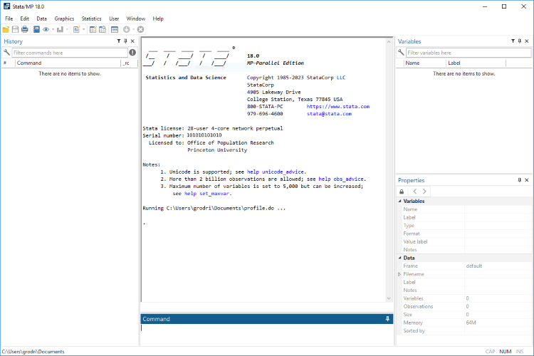
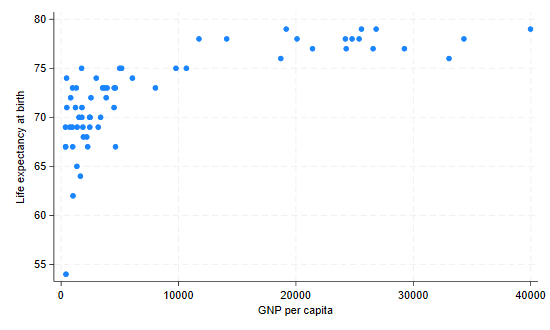
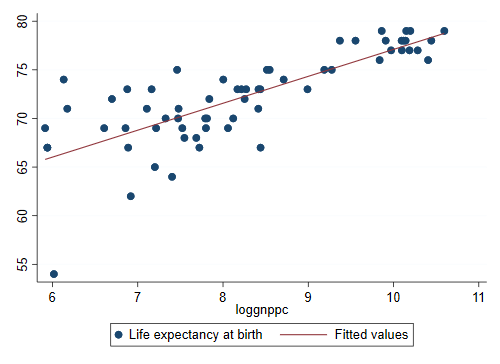
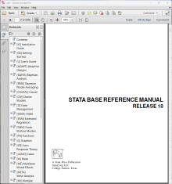

markstat command
to combine Markdown and Stata, as described here. See
also the computing logs for the statistics courses on this site.Stata is a powerful statistical package with smart data-management facilities, a wide array of up-to-date statistical techniques, and an excellent system for producing publication-quality tables and graphs. Stata is fast and easy to use. In this tutorial I start with a quick introduction and overview, and then discuss data management, tables of various types, statistical graphs, and Stata programming.
The tutorial has been updated for version 18, but most of the discussion applies to older versions as well. An important exception is Section 3 on Stata Tables, which describes a set a commands for producing customizable tables introduced in version 17, with a new command in version 18. A few other features added in recent versions will be noted along the way.
Stata is available for Windows, Mac, and Unix computers. This tutorial was created using the Windows version, but all the code shown here runs in all three platforms. There are three editions: (1) Stata/BE, the basic edition (formerly intercooled), suitable for mid-size datasets with up to 2048 variables, (2) Stata/SE, the standard edition (formerly special edition), it can handle up to 32,766 variables as well as longer strings and matrices, and (3) Stata/MP, an edition for multicore/multiprocessor computers that allows processing very large datasets and is substantially faster. (The first two designations changed with Stata 17.) The number of observations is limited by your computer’s memory, as long as it doesn’t exceed about two billion in Stata/SE and about a trillion in Stata/MP. Starting with version 16 Stata can be installed on 64-bit computers only; previous versions were available for both older 32-bit and newer 64-bit computers. All of these versions can read each other’s files within their size limits.
When Stata starts up you see five docked windows, initially arranged as shown in the figure below.

The window labeled Command is where you type your commands. Stata then shows the results in the larger window immediately above, called appropriately enough Results. Your command is added to a list in the window labeled History on the left (called Review in earlier versions), so you can keep track of the commands you have used. The window labeled Variables, on the top right, lists the variables in your dataset. The Properties window immediately below that, introduced in version 12, displays properties of your variables and dataset.
You can resize or even close some of these windows. Stata remembers its settings the next time it runs. You can also save (and then load) named preference sets using the menu Edit|Preferences. I happen to like the Compact Window Layout. You can also choose the font used in each window, just right click and select font from the context menu. Finally, it is possible to change the color scheme under General Preferences. You can select one of four overall color schemes: light, light gray, blue or dark. You can also choose one of several preset or customizable styles for the Results and Viewer windows.
There are other windows that we will discuss as needed, namely the Graph, Viewer, Variables Manager, Data Editor, and Do file Editor.
Starting with version 8 Stata’s graphical user interface (GUI) allows selecting commands and options from a menu and dialog system. However, I strongly recommend using the command language as a way to ensure reproducibility of your results. In fact, I recommend that you type your commands on a separate file, called a do file, as explained in Section 1.2 below, but for now we will just type in the command window. The GUI can be helpful when you are starting to learn Stata, particularly because after you point and click on the menus and dialogs, Stata types the corresponding command for you.
Stata can work as a calculator using the display
command. Try typing the following (you may skip the dot at the start of
a line, which is how Stata marks the lines you type):
. display 2+2 4 . display 2 * ttail(20, 2.1) .04861759
Stata commands are case-sensitive, display is not the
same as Display and the latter will not work.
Commands can also be abbreviated; the documentation and online help
underlines the shortest legal abbreviation of each command, and we will
do the same here.
The second command shows the use of a built-in function to compute a
p-value, in this case twice the probability that a Student’s t with 20
d.f. exceeds 2.1. This result would just make the 5% cutoff. To find the
two-tailed 5% critical value try
display invttail(20, 0.025). We list a few other functions
you can use in Section 2.
If you issue a command and discover that it doesn’t work, press the Page Up key to recall it (you can cycle through your command history using the Page Up and Page Down keys) and then edit it using the arrow, insert and delete keys, which work exactly as you would expect. For example the Arrow keys advance a character at a time, combined with the Shift key they select a character at a time, and combined with the Ctlr or Option key they advance or select a word at a time, which you can then delete or replace. A command can be as long as needed (up to some 64k characters); in an interactive session you just keep on typing and the command window will wrap and scroll as needed.
Stata has excellent online help. To obtain help on a command (or
function) type help command_name, which displays the help
on a separate window called the Viewer. Try
help ttail. Each help file appears in a separate viewer tab
(a separate window before Stata 12) unless you use the option
, nonew.
If you don’t know the name of the command you need, you can search
for it. Stata has a search command that will search the
documentation and other resources, type help search to
learn more. By default this command searches the net in Stata 13 and
later. If you are using an earlier version, learn about the
findit command. Also, the help command reverts
to a search if the argument is not recognized as a command. Try
help Student's t. This will list all Stata commands and
functions related to the t distribution. Among the list of “Stat
functions” you will see t() for the distribution function
and ttail() for right-tail probabilities. Stata can also
compute tail probabilities for the normal, chi-squared and F
distributions, among others.
One of the nicest features of Stata is that, starting with version
11, all the documentation is available in PDF files. (In fact, since
version 13 you can no longer get printed manuals.) Moreover, these files
are linked from the online help, so you can jump directly to the
relevant section of the manual. To learn more about the help system type
help help.
Stata comes with a few sample data files. You will learn how to read
your own data into Stata in Section 2, but for now we will load one of
the sample files, namely lifeexp.dta, which has data on
life expectancy and gross national product (GNP) per capita in 1998 for
68 countries. To see a list of the files shipped with Stata type
sysuse dir. To load the file we want type
sysuse lifeexp (the file extension is optional, so I left
it out). To see what’s in the file type describe,.
(This can be abbreviated to a single letter, but I prefer
desc.)
. sysuse lifeexp, clear
(Life expectancy, 1998)
. desc
Contains data from C:\Program Files\Stata18\ado\base/l/lifeexp.dta
Observations: 68 Life expectancy, 1998
Variables: 6 26 Mar 2022 09:40
(_dta has notes)
─────────────────────────────────────────────────────────────────────────────────
Variable Storage Display Value
name type format label Variable label
─────────────────────────────────────────────────────────────────────────────────
region byte %16.0g region Region
country str28 %28s Country
popgrowth float %9.0g * Avg. annual % growth
lexp byte %9.0g * Life expectancy at birth
gnppc float %9.0g * GNP per capita
safewater byte %9.0g * Safe water
* indicated variables have notes
─────────────────────────────────────────────────────────────────────────────────
Sorted by:
We see that we have six variables. The dataset has notes that you can
see by typing notes. Four of the variables have annotations
that you can see by typing notes varname. You’ll learn how
to add notes in Section 2.
Let us run simple descriptive statistics for the two variables we are
interested in, using the summarize command followed
by the names of the variables:
. summarize lexp gnppc
Variable │ Obs Mean Std. dev. Min Max
─────────────┼─────────────────────────────────────────────────────────
lexp │ 68 72.27941 4.715315 54 79
gnppc │ 63 8674.857 10634.68 370 39980
We see that live expectancy averages 72.3 years and GNP per capita
ranges from $370 to $39,980 with an average of $8,675. We also see that
Stata reports only 63 observations on GNP per capita, so we must have
some missing values. Let us list the countries for which we
are missing GNP per capita:
. list country gnppc if missing(gnppc)
┌──────────────────────────────────────┐
│ country gnppc │
├──────────────────────────────────────┤
7. │ Bosnia and Herzegovina . │
40. │ Turkmenistan . │
44. │ Yugoslavia, FR (Serb./Mont.) . │
46. │ Cuba . │
56. │ Puerto Rico . │
└──────────────────────────────────────┘
We see that we have indeed five missing values. This example
illustrates a powerful feature of Stata: the action of any command can
be restricted to a subset of the data. If we had typed
list country gnppc we would have listed these variables for
all 68 countries. Adding the condition
if missing(gnppc) restricts the list to cases where
gnppc is missing. Note that Stata lists missing values
using a dot. We’ll learn more about missing values in Section 2.
To see how life expectancy varies with GNP per capita we will draw a
scatter plot using the graph command, which has a myriad of
subcommands and options, some of which we describe in Section 4.
. graph twoway scatter lexp gnppc . graph export scatter.png, width(550) replace file scatter.png saved as PNG format

The plot shows a curvilinear relationship between GNP per capita and life expectancy. We will see if the relationship can be linearized by taking the log of GNP per capita.
We compute a new variable using the generate
command with a new variable name and an arithmetic expression. Choosing
good variable names is important. When computing logs I usually just
prefix the old variable name with log or l,
but compound names can easily become cryptic and hard-to-read. Some
programmers separate words using an underscore, as in
log_gnp_pc, and others prefer the camel-casing convention
which capitalizes each word after the first: logGnpPc. I
suggest you develop a consistent style and stick to it. Variable labels
can also help, as described in Section 2.
To compute natural logs we use the built-in function
log:
. gen loggnppc = log(gnppc) (5 missing values generated)
Stata says it has generated five missing values. These correspond to the five countries for which we were missing GNP per capita. Try to confirm this statement using the list command. We will learn more about generating new variables in Section 2.
We are now ready to run a linear regression of life expectancy on log
GNP per capita. We will use the regress command,
which lists the outcome followed by the predictors (here just one,
loggnppc)
. regress lexp loggnppc
Source │ SS df MS Number of obs = 63
─────────────┼────────────────────────────────── F(1, 61) = 97.09
Model │ 873.264865 1 873.264865 Prob > F = 0.0000
Residual │ 548.671643 61 8.99461709 R-squared = 0.6141
─────────────┼────────────────────────────────── Adj R-squared = 0.6078
Total │ 1421.93651 62 22.9344598 Root MSE = 2.9991
─────────────┬────────────────────────────────────────────────────────────────
lexp │ Coefficient Std. err. t P>|t| [95% conf. interval]
─────────────┼────────────────────────────────────────────────────────────────
loggnppc │ 2.768349 .2809566 9.85 0.000 2.206542 3.330157
_cons │ 49.41502 2.348494 21.04 0.000 44.71892 54.11113
─────────────┴────────────────────────────────────────────────────────────────
Note that the regression is based on only 63 observations. Stata omits observations that are missing the outcome or one of the predictors. The log of GNP per capita accounts for 61% of the variation in life expectancy in these countries. We also see that a one percent increase in GNP per capita is associated with an increase of 0.0277 years in life expectancy. (To see this point note that if GNP increases by one percent its log increases by 0.01.)
Following a regression (or in fact any estimation command) you can
retype the command with no arguments to see the results again. Try
typing reg.
Stata has a number of post-estimation commands that build on the
results of a model fit. A useful command is predict, which
can be used to generate fitted values or residuals following a
regression. The command
. predict plexp (option xb assumed; fitted values) (5 missing values generated)
generates a new variable, plexp, that has the life
expectancy predicted from our regression equation. No predictions are
made for the five countries without GNP per capita. (If life expectancy
was missing for a country it would be excluded from the regression, but
a prediction would be made for it. This technique can be used to fill-in
missing values.)
A common task is to superimpose a regression line on a scatter plot
to inspect the quality of the fit. We could do this using the
predictions we stored in plexp, but Stata’s
graph command knows how to do linear fits on the fly, using
the lfit plot type, and can superimpose different types of
twoway plots, as explained in more detail in Section 4. Try
the command
. graph twoway (scatter lexp loggnppc) (lfit lexp loggnppc) . graph export fit.png, width(550) replace file fit.png saved as PNG format

In this command each expression in parenthesis is a separate two-way plot to be overlayed in the same graph. The fit looks reasonably good, except for a possible outlier.
It’s hard not to notice the country on the bottom left of the graph, which has much lower life expectancy than one would expect, even given its low GNP per capita. To find which country it is we list the (names of the) countries where life expectancy is less than 55:
. list country lexp plexp if lexp < 55, clean
country lexp plexp
50. Haiti 54 66.06985
We find that the outlier is Haiti, with a life expectancy 12 years
less than one would expect given its GNP per capita. (The keyword
clean after the comma is an option which omits the
borders on the listing. Many Stata commands have options, and these are
always specified after a comma.) If you are curious where the United
States is try
. list gnppc loggnppc lexp plexp if country == "United States", clean
gnppc loggnppc lexp plexp
58. 29240 10.28329 77 77.88277
Here we restricted the listing to cases where the value of the
variable country was “United States”. Note the use of a
double equal sign in a logical expression. In Stata x = 2
assigns the value 2 to the variable x, whereas
x == 2 checks to see if the value of x is
2.
To exit Stata you use the exit command. (You can also
use a shortcut or the menu system, type help exit for
details for your operating system.) If you have been following along
this tutorial by typing the commands and try to exit Stata will refuse,
saying “no; data in memory would be lost”. This happens because we have
added a new variable that is not part of the original dataset, and it
hasn’t been saved. As you can see, Stata is very careful to ensure we
don’t loose our work.
If you don’t care about saving anything you can type
exit, clear, which tells Stata to quit no matter what.
Alternatively, you can save the data to disk using the
save filename command, and then exit. A cautious programmer
will always save a modified file using a new name.
While it is fun to type commands interactively and see the results straightaway, serious work requires that you save your results and keep track of the commands that you have used, so that you can document your work and reproduce it later if needed. Here are some practical recommendations.
Stata reads and saves data from the current working directory, which
you can display using the command pwd, short for print
working directory. You can change directory using the command
cd directory_name, where the
directory name follows the conventions of your operating system,
including an optional drive letter on Windows. Type help cd
to learn more. I recommend that you create a separate directory for each
course or research project you are involved in, and start your Stata
session by changing to that directory.
Stata has other commands for interacting with the operating system,
including mkdir to create a directory, dir to
list the names of the files in a directory, type to list
their contents, copy to copy files, and erase
to delete a file. You can (and probably should) do these tasks using the
operating system directly, but the Stata commands may come handy if you
want to write a script to perform repetitive tasks.
So far all our output has gone to the Results window, where
it can be viewed but eventually disappears. (You can control how far you
can scroll back, type help scrollbufsize to learn more.) To
keep a permanent record of your results, however, you should
log your session. When you open a log, Stata writes all
results to both the Results window and to the file you specify.
To open a log file use the command
log using filename, text replacewhere filename is the name of your log file. Note the use of
two recommended options: text and replace.
By default the log is written using SMCL, Stata Markup and Control
Language (pronounced “smickle”), which provides some formatting
facilities but can only be viewed using Stata’s Viewer.
Fortunately, there is a text option to create logs in plain
text format, which can be viewed in a text editor or a word processor.
(An alternative is to create your log in SMCL and then use the
translate command to convert it to plain text, postscript,
or even PDF, type help translate to learn more about this
option.)
The replace option specifies that the file is to be
overwritten if it already exists. This will often be the case if (like
me) you need to run your commands several times to get them right. In
fact, if an earlier run has failed it is likely that you have a log file
open, in which case the log command will fail. The solution
is to close any open logs using the log close command. The
problem with this solution is that it will not work if there is no log
open! The way out of the catch 22 is to use
capture log closeThe capture keyword tells Stata to run the command that
follows and ignore any errors. Use judiciously!
A do file is just a set of Stata commands typed in a plain text file.
You can use Stata’s own built-in do-file editor, which has the
great advantage that you can run your code directly from the editor
using the shortcut Ctrl-D or Cmd-D or the run
icon, which do their job smartly: if you have selected some text Stata
will extend the selection to include complete lines and will then run
them; if there is no selection Stata will run the entire script. The
editor can be activated with the doedit command, the
shortcut Ctrl-9 or Cmd-9, or an icon on the
GUI.
Alternatively, you can use any text or code editor. Save the file
using the extension .do and then execute it using the
command do filename. For a thorough
discussion of alternative text editors see http://fmwww.bc.edu/repec/bocode/t/textEditors.html, a
page maintained by Nicholas J. Cox, of the University of Durham.
You could even use a word processor such as Word, but you would have to remember to save the file in plain text format, not in Word document format. Also, you may find Word’s insistence on capitalizing the first word on each line annoying when you are trying to type Stata commands that must be in lowercase. You can, of course, turn auto-correct off. But it’s a lot easier to just use a plain-text editor.
Code that looks obvious to you may not be so obvious to a co-worker, or even to you a few months later. It is always a good idea to annotate your do files with explanatory comments that provide the gist of what you are trying to do.
In the Stata command window you can start a line with a
* to indicate that it is a comment, not a command. This can
be useful to annotate your output.
In a do file you can also use two other types of comments:
// and /* */.
// is used to indicate that everything that
follows to the end of the line is a comment and should be
ignored by Stata. For example you could write
gen one = 1 // this will serve as a constant in the model/* */ is used to indicate that all the text
between the opening /* and the closing
*/, which may be a few characters or may span several
lines, is a comment to be ignored by Stata. This type of comment can be
used anywhere, even in the middle of a line, and is sometimes used to
“comment out” code.
There is a third type of comment used to break very long lines, as
explained in the next subsection. Type help comments to
learn more about comments.
It is always a good idea to start every do file with comments that include at least a title, the name of the programmer who wrote the file, and the date. Assumptions about required files should also be noted.
When you are typing on the command window a command can be as long as needed. In a do-file you will probably want to break long commands into lines to improve readability.
To indicate to Stata that a command continues on the next line you
use ///, which says that everything else to the end of the
line is a comment and the command itself continues on the next
line. For example you could write
graph twoway (scatter lexp loggnppc) ///
(lfit lexp loggnppc)Old hands might write
graph twoway (scatter lexp loggnppc) /*
*/ (lfit lexp loggnppc)which “comments out” the end of the line.
An alternative is to tell Stata to use a semi-colon instead of the
carriage return at the end of the line to mark the end of a command,
using #delimit ;, as in this example:
#delimit ;
graph twoway (scatter lexp loggnppc)
(lfit lexp loggnppc) ;Now all commands need to terminate with a semi-colon. To return to using carriage return as the delimiter use
#delimit crThe delimiter can only be changed in do files. But then you always use do files, right?
Here’s a simple do file that can reproduce all the results in our Quick Tour. The file doesn’t have many comments because this page has all the details. Following the listing we comment on a couple of lines that require explanation.
// A Quick Tour of Stata
// Germán Rodríguez - June 2023
version 18
clear
capture log close
log using QuickTour, text replace
display 2+2
display 2 * ttail(20,2.1)
// load sample data and inspect
sysuse lifeexp
desc
summarize lexp gnppc
list country gnppc if missing(gnppc)
graph twoway scatter lexp gnppc, ///
title(Life Expectancy and GNP ) xtitle(GNP per capita)
// save the graph in PNG format
graph export scatter.png, width(550) replace
gen loggnppc = log(gnppc)
regress lexp loggnppc
predict plexp
graph twoway (scatter lexp loggnppc) (lfit lexp loggnppc) ///
, title(Life Expectancy and GNP) xtitle(log GNP per capita)
graph export fit.png, width(550) replace
list country lexp plexp if lexp < 55, clean
list gnppc loggnppc lexp plexp if country == "United States", clean
log closeWe start the do file by specifying the version of Stata that we are
using, in this case 18. This helps ensure that future versions of Stata
will continue to interpret the commands correctly, even if Stata has
changed, see help version for details. (The previous
version of this file read version 17, and I could have left that in
place to run under version control; the results would be the same
because none of the commands used in this quick tour has changed.)
The clear statement deletes the data currently held in
memory and any value labels you might have. We need clear
just in case we need to rerun the program, as the sysuse
command would then fail because we already have a dataset in memory and
we have not saved it. An alternative with the same effect is to type
sysuse lifeexp, clear. (Stata keeps other objects in memory
as well, including saved results, scalars and matrices, although we
haven’t had occasion to use these yet. Typing clear all
removes these objects from memory, ensuring that you start with a
completely clean slate. See help clear for more
information. Usually, however, all you need to do is clear the
data.)
Note also that we use a graph export command to convert
the graph in memory to Portable Network Graphics (PNG) format, ready for
inclusion in a web page. We discuss other graph formats in Section
4.
Having used a few Stata commands it may be time to comment briefly on their structure, which usually follows the following syntax, where bold indicates keywords and square brackets indicate optional elements:
[by varlist:] command [varlist] [=exp] [if exp] [in range] [weight] [using filename] [,options]
We now describe each syntax element:
command:describe and Describe are different, and only
the former will work. Commands can usually be abbreviated as noted
earlier. When we introduce a command we underline the letters that are
required. For example regress indicates that the
regress command can be abbreviated to reg.
varlist:describe lexp or
regress lexp loggnppc. Variable names are case sensitive;
lexp and LEXP are different variables. A
variable name can be abbreviated to the minimum number of letters that
makes it unique in a dataset. For example in our quick tour we could
refer to loggnppc as log because it is the
only variable that begins with those three letters, but this is a really
bad idea. Abbreviations that are unique may become ambiguous as you
create new variables, so you have to be very careful. You can also use
wildcards such as v* or name ranges, such as
v101-v105 to refer to several variables. Type
help varlist to learn more about variable lists.
=exp:generate log_gnp = log(gnp), include an arithmetic
expression, basically a formula using the standard operators (+ - * and
/ for the four basic operations and ^ for exponentiation, so 3^2 is
three squared), functions, and parentheses. We discuss expressions in
Section 2.
if exp and
in range:lexp < 55. Relational operators are <, <=,
==, >= and >, and logical negation is expressed using
! or ~, as we will see in Section 2.
Alternatively, you can specify a range of the data, for example
in 1/10 will restrict the command’s action to the first 10
observations. Type help numlist to learn more about lists
of numbers.
weight:help weights
to learn more.
using
filename:using introduces a file name; this can be a
file in your computer, on the network, or on the internet, as you will
see when we discuss data input in Section 2.
options:options that are specified
following a comma. To obtain a list of the options available with a
command type help command. where command is
the actual command name.
by varlist:bysort instead).
There are many resources available to learn more about Stata, both online and in print.
Stata has an excellent website at https://www.stata.com. Among other things you will find that they make available online all datasets used in the official documentation, that they publish a journal called The Stata Journal, and that they have an excellent bookstore with texts on Stata and related statistical subjects. Stata also offers email and web-based training courses called NetCourses, see https://www.stata.com/netcourse/.
There is a Stata forum where you can post questions and receive prompt and knowledgeable answers from other users, quite often from the indefatigable and extremely knowledgeable Nicholas Cox, who deserves special recognition for his service to the user community. The list was started by Marcello Pagano at the Harvard School of Public Health, and is now maintained by StataCorp, see https://www.statalist.org for more information, including how to participate. Stata also maintains a list of frequently asked questions (FAQ) classified by topic, see https://www.stata.com/support/faqs/.
UCLA maintains an excellent Stata portal at https://stats.idre.ucla.edu/stata/, with many useful links, including a list of resources to help you learn and stay up-to-date with Stata, including classes and seminars, learning modules and useful links, not to mention comparisons with other packages such as SAS and SPSS.
 The Stata documentation has been growing with each version and now consists of 33 volumes with more than 18,000 pages, all available in PDF format with your copy of Stata. Here is a list, with italics indicating two new and one renamed manual in Stata 18. The basic documentation consists of a Base Reference Manual, separate volumes on Data Management, Graphics, Customizable Tables and Collected Results, Reporting, and Functions; a User’s Guide, an Index, and Getting Started with Stata, which has platform-specific versions for Windows, Mac and Unix. Some statistical subjects that may be important to you are described in 21 separate manuals: Adaptive Designs: Group Sequential Trials, Bayesian Analysis, Bayesian Model Averaging, Causal Inference and Treatment-Effects Estimation, Choice Models, Dynamic Stochastic General Equilibrium Models, Extended Regression Models, Finite Mixture Models, Item Response Theory, Lasso, Longitudinal Data/Panel Data, Meta Analysis, Multilevel Mixed Effects, Multiple Imputation, Multivariate Statistics; Power, Precision and Sample Size; Spatial Autoregressive Models, Structural Equation Modeling, Survey Data, Survival Analysis, and Time Series. Additional volumes of interest to programmers, particularly those seeking to extend Stata’s capabilities, are manuals on Programming and on Mata, Stata’s matrix programming language. You can access all of these manuals from the help system or at https://www.stata.com/features/documentation/.
A good introduction to Stata is Alan C. Acock’s A Gentle Introduction to Stata, now in a revised 6th edition. One of my favorite statistical modeling books is Scott Long and Jeremy Freese’s Regression Models for Categorical Dependent Variables Using Stata (3rd edition); Section 2.10 of this book is a set of recommended practices that should be read and followed faithfully by every aspiring Stata data analyst. Another book I like is Michael Mitchell’s excellent A Visual Guide to Stata Graphics, which was written specially to introduce the new graphs in version 8 and is now in its 4th edition. Two useful (but more specialized) references written by the developers of Stata are An Introduction to Survival Analysis Using Stata (revised 3rd edition), by Mario Cleves, William Gould and Julia Marchenko, and Maximum Likelihood Estimation with Stata (4th edition) by William Gould, Jeffrey Pitblado, and Brian Poi. Readers interested in programming Stata will find Christopher F. Baum’s An Introduction to Stata Programming (2nd edition), and William Gould’s The Mata Book: A Book for Serious Programmers and Those Who Want to Be, both invaluable.
Continue with Data Management